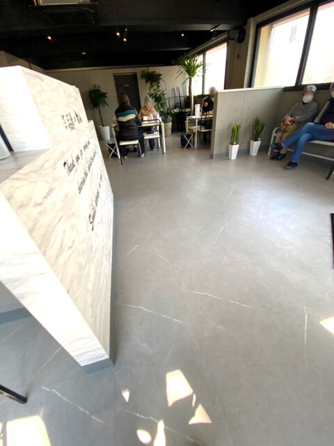
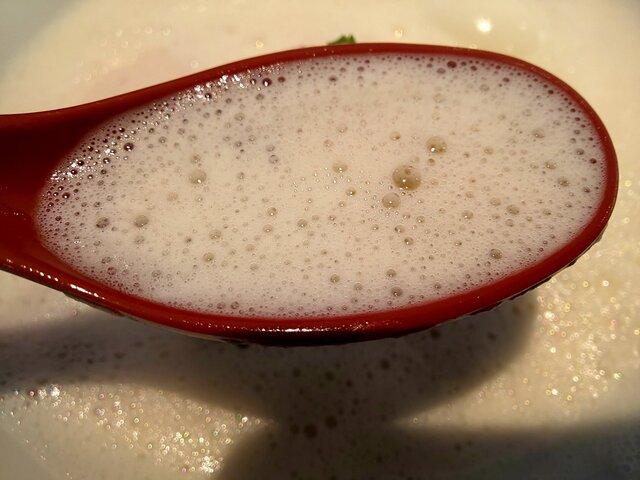
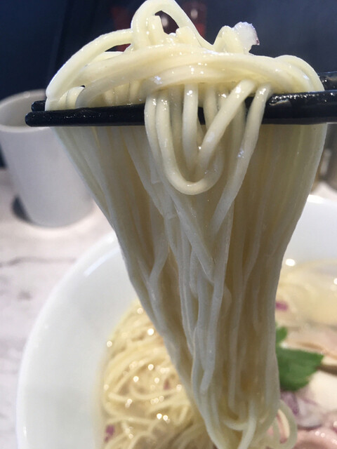
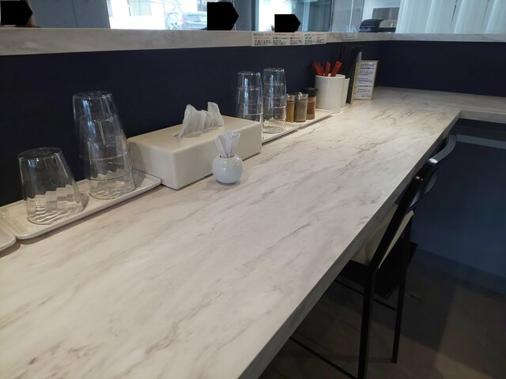

One broth, simmered with patience. 一杯の白湯に、ひたむきな手間を。 한 그릇의 백탕에, 정성을 담아. 一碗白汤，慢火细熬。
A sixteen-seat counter devoted to chicken paitan — bones simmered for hours into a silky white broth, crowned with a fine espuma foam and poured over thin straight noodles. Made fresh each day, served until the soup runs out. 鶏白湯（とりぱいたん）ひとすじの、十六席の小さならぁ麺店。長時間炊いた白いスープに、きめ細かなエスプーマの泡をまとわせ、細ストレート麺に。毎日仕込み、スープがなくなり次第終了です。 닭 백탕(파이탄) 하나에 집중한 열여섯 석의 작은 라멘집. 오래 고아낸 뽀얀 국물 위에 고운 에스푸마 거품을 얹어 가는 스트레이트 면과 함께 냅니다. 매일 준비하며, 국물이 소진되면 영업을 마칩니다. 一家仅十六席、专注鸡白汤的小店。长时间熬煮的醇白汤头覆以细腻意式泡沫，配上纤细直面。每日新鲜熬制，汤尽即止。




In Japanese, 湯 (yu) is the simmering stock at the heart of a bowl of ramen. Our name carries that character deliberately — everything here begins and ends with the broth. ラーメンの要となる出汁を表す「湯（ゆ）」の一字を、店名にあえて掲げました。ここでのすべては、スープに始まりスープに終わる。 라멘의 핵심인 육수를 뜻하는 ‘湯(유)’라는 글자를 상호에 담았습니다. 이곳의 모든 것은 국물로 시작해 국물로 끝납니다. 「湯（yu）」是拉面灵魂所在的高汤。我们特意将这个字放入店名——这里的一切，始于汤头，终于汤头。
Chicken bones are simmered for hours until the stock turns opaque and silky, then whipped into a fine espuma foam so light it drinks like a potage. The tare stays restrained so the chicken leads, over thin straight noodles that carry the soup to the last mouthful. 鶏ガラを何時間も炊き、白く濁るまで旨味を引き出したスープを、きめ細かなエスプーマの泡に。ポタージュのように軽やかな口当たりです。タレは控えめに、鶏を主役に。細ストレート麺が最後の一口までスープを運びます。 닭 뼈를 몇 시간이고 고아 뽀얗게 우러난 국물을 고운 에스푸마 거품으로 만들어 포타주처럼 가볍게 넘어갑니다. 타레는 절제해 닭이 주인공이 되고, 가는 스트레이트 면이 마지막 한 입까지 국물을 실어 나릅니다. 鸡骨慢熬数小时，直至汤色乳白、鲜味尽出，再打成细腻的意式泡沫，轻盈如浓汤般顺口。调味克制，让鸡本味当主角，纤细直面将汤头送至最后一口。
More bowls on Instagram — 最新の一杯はこちら：인스타그램에서 더 보기 — 更多请见 Instagram — @ramen_santan
Rated 4.4 on Google Maps. A few words from diners below — Santan's foam paitan is best known for its cappuccino-smooth broth. Googleマップで4.4の評価。お客様の声より — 三湯の泡白湯は、カプチーノのように滑らかなスープで知られています。 구글 지도 4.4점. 손님들의 후기 — 三湯의 거품 백탕은 카푸치노처럼 부드러운 국물로 유명합니다. 谷歌地图评分4.4。摘自食客留言——三湯的泡沫白汤以卡布奇诺般顺滑的汤头著称。
Rating pulled from Google Maps; quoted reviews are from Tabelog (Google's review text isn't publicly accessible without the Places API). Live-syncing requires the Google Places API or a Tabelog feed. 評価はGoogleマップより取得。掲載の口コミ本文は食べログからの引用です（Googleのレビュー本文はPlaces APIなしでは取得できません）。自動連携にはGoogle Places APIまたは食べログ連携が必要です。 평점은 구글 지도에서 가져왔습니다. 인용된 후기 본문은 타베로그의 것입니다(구글 리뷰 본문은 Places API 없이는 가져올 수 없습니다). 실시간 연동에는 Google Places API 또는 타베로그 피드가 필요합니다. 评分取自谷歌地图；引用的评价文字来自食べログ（谷歌的评价原文在没有 Places API 时无法公开获取）。实时同步需使用 Google Places API 或食べログ数据源。
4-2 Shonin-nishi, Beppu, Oita — Iwaizono Bldg. 1F〒874-0904 大分県別府市上人西4-2 祝園ビル1F오이타현 벳푸시 조닌니시 4-2 이와이조노 빌딩 1F大分县别府市上人西4-2 祝园大厦1F
Last order 20:30. We may close early if the soup runs out.ラストオーダー20:30。スープがなくなり次第、早じまいする場合がございます。라스트 오더 20:30. 국물이 소진되면 조기 마감할 수 있습니다.最后点单 20:30，汤尽或提前打烊。
📍 4-2 Shonin-nishi, Beppu, Oita 874-0904〒874-0904 大分県別府市上人西4-2 祝園ビル1F오이타현 벳푸시 조닌니시 4-2 이와이조노 빌딩 1F大分县别府市上人西4-2 祝园大厦1F
🚃 7-min walk from Beppu Daigaku Station別府大学駅より徒歩7分벳푸대학역에서 도보 7분别府大学站步行7分
🚗 Parking in front & behind the shop; bicycle parking in front店舗前・裏に駐車場、店前に駐輪場あり가게 앞·뒤 주차장, 앞쪽 자전거 주차 가능店前与店后设停车场，店前有自行车停放处
Cash only — no cards or QR pay現金のみ（カード・QR決済不可）현금만 가능 (카드·QR 불가)仅收现金（不支持刷卡与二维码）